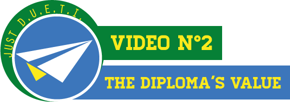

You want to go abroad, to dicover something else and to study in a foreign country ?
Did you hear about the DUETI ? In this first video, the diploma is presented on different views : the people we interviewed didn't necessarily know about it and are like you : interested about studying abroad without knowing a lot about it and all that come with it.
Prejudices, preconceived ideas, motivations …
Everybody have their own mind and their dream destination and JUST DUETI presents some to you !

So it's for good, you 're willing to go ?
You're interested in the DUETI or ERASMUS but you need to know about the value of the diploma and where to start ?
Don't panic, our team had been studying the subject and had put together all the necessary informations for you to leave with all the tools !
Thanks to qualified people, we presents you all the steps you have to go through before you leave !
Because every experience is different and the paths are numerous, this third video will present you some : communication, commerce, management, languages studies...
JUST DUETI offers you different points of view on the diploma, examples of different destinations but mostly shows you a outline of how studying abroad works.
A DUETI is mostly about going abroad to study but not only ! Leaving for a foreign country is also about integration and adaptation : to the culture, the language, the habbits, opening to the world and others,...
Extra-Scholar life is very important and if everything goes right, you can have a pleasant stay and go home with amazing memories of it.
The Students we interviewed in this video told us about the way they approach the social and cultural part of their year abroad.
At the end of the year, some comes back, others stay in the country they were, but what are the students' opinions when they return ?
Few years after ? Indeed, the DUETI is a big asset who allows you to continue your studies but also to enter faster in the professional world.
JUST DUETI interviewed those students who, with hindsight, give us their opinion on the real earnings of this international diploma.